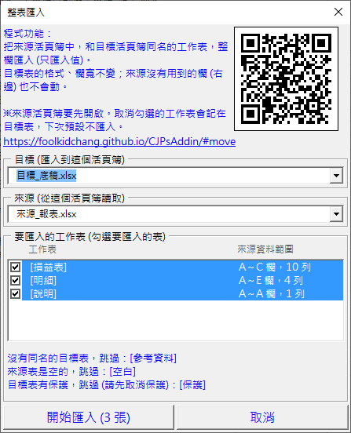

Excel 每月報表更新到底稿：同名工作表一次整欄貼上值
每個月把系統匯出的報表貼進固定格式的底稿，底稿裡的公式再參照這些資料。工作表一多，一張一張「複製、選擇性貼上 → 值」很花時間，也容易貼錯張。CJP 增益集 (CJPsAddin，免費的 Excel VBA Add-in) 的整表匯入：來源活頁簿和目標活頁簿中名稱相同的工作表，一次把來源的資料整欄匯入目標。只匯入值，底稿的格式、欄寬、公式欄都維持原樣。
v1.13.00 的選單名稱是「資料搬移」，功能相同。
適合這些時候用
- 每月的報表，更新到同一份工作底稿
- 系統匯出好幾張表，底稿也有同名的表
- 底稿的公式、樞紐分析表參照固定的欄位，只要換資料
使用前：來源活頁簿先開啟；目標的工作表名稱和來源一樣 (前後空白、英文大小寫不影響)；目標檔會被覆寫，第一次用請先備份。
用 CJP 增益集：3 個步驟
- 先開啟來源活頁簿，再切到要更新的底稿 (目標)，在增益集選單「常用功能二」點整表匯入
- 確認來源、目標，以及配對成功的工作表清單：每一列是「[來源表] → [目標表]」，右側是來源資料的範圍。不想匯入的表取消勾選 (例如兩邊都有的「說明」表)，下次會記住
- 按「開始匯入」，完成後會列出成功和失敗的工作表
清單下方會列出跳過的表和原因：沒有同名的目標表、來源表是空的、目標表有保護。

只匯入值：內容會怎麼變
只匯入值等於把每一格重新輸入一次，和「先貼到記事本、再貼回 Excel」的效果一樣。結果會依目標欄的儲存格格式而不同：
| 來源的內容 | 目標欄是一般格式 | 目標欄是文字格式 |
|---|---|---|
文字的 1250 | 數字 1,250 (套用目標欄的數字格式) | 文字 1250 |
文字的 2026/10/02 | 日期 | 文字 |
員編 00123 | 123：前導零消失 | 00123 |
| 16 碼卡號 | 4.31112E+15：超過 15 位的數字會失真 | 完整保留 |
開頭是 -、+、@、= 的文字 | 保留為文字，不會被當成公式 | |
| 公式 | 匯入的是計算結果 | |
員編、卡號、代碼這類要保留原樣的欄位，請先把目標欄設成文字格式。
常見問題
目標表裡我自己加的公式和備註會不見嗎？
目標表從 A 欄到來源最後一欄是整欄清除後再寫入，這幾欄裡原有的內容都會清掉；更右邊的欄不受影響。底稿自己的公式、備註，請放在來源資料範圍的右邊。
取消勾選的表，下次還會記得嗎？
會。取消勾選的目標表會記在那張工作表裡，下次預設不勾。目標檔要存檔才記得住；複製工作表時，這個記錄不會跟著複製。
為什麼有一張表匯入失敗？
常見原因是目標欄有跨欄的合併儲存格，結果訊息會列出來；其他表照常匯入。目標表有保護時會直接跳過，請先取消保護。
要付費嗎？公司電腦可以裝嗎？
免費。安裝方式和注意事項請看安裝方式。目標檔會被覆寫，使用前請先備份。